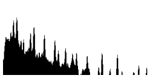
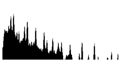

Mini Audio Viz
october 2017
A frequency visualizer that works with any audio file - the audio file must be called "3" instead of *.mp3 (#golfctober 2017)

Github: here
Demo: here
A frequency visualizer that works with any audio file - the audio file must be called "3" instead of *.mp3 (#golfctober 2017)

Github: here
Demo: here